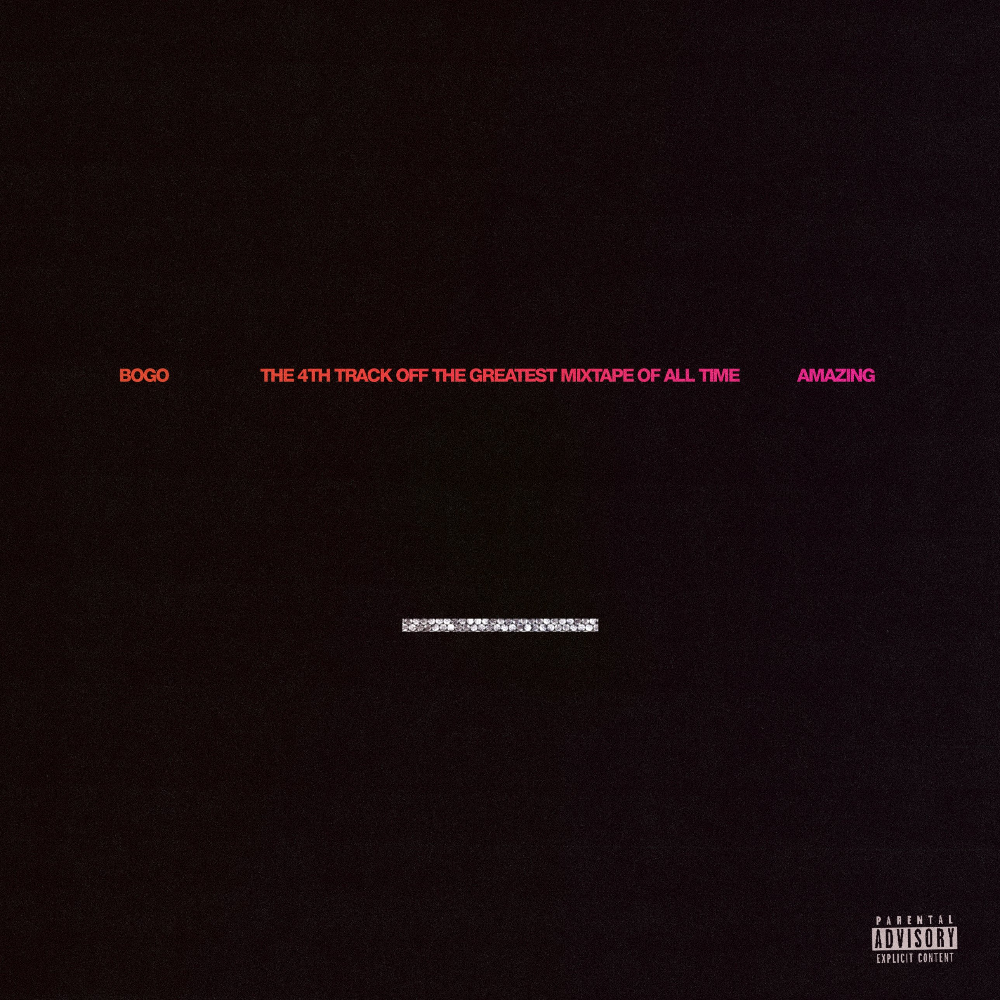

Opus Collective
The Future. The Legacy. The Sound.

The first ever release under Opus CollectiveOut October 16 · Presave →01 / THE MOVEMENTTHE VISION
The next era of culture won’t be handed to us. We’re building it together.
Artists. Producers. Designers. Filmmakers. One collective creating beyond the limits of the industry. Music is only the beginning.
Read the full vision →


02 / THE CULTUREMADE BY US. FOR US.
NOT JUST A COMMUNITY.
THE CULTURE
IS MOVING.
The records. The conversations. The rooms where ideas become real. Opus is the people making it happen, together.
03 / FIND YOUR WAY INFOUR DOORS
There’s a world here. Step inside.
05 / THE CREEDWHAT WE STAND ON
We own the movement by building it.
We own the legacy through what we leave behind.
We own the future by taking part in shaping it.
You’ll wish you were here.
The next chapter is taking shape. Be among the first to hear about new experiences, opportunities, and what comes next.